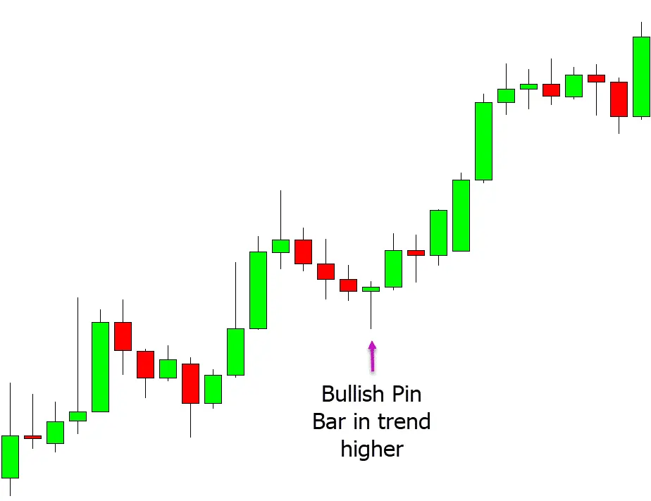

The Selling pattern, also known as the Pin Bar pattern, is a trading pattern that indicates the end of the market's high or low direction and signals the opposite direction. This pattern consists of a long body and a short tail. If the length of the body is three times or more than the length of the tail, the pattern is more effective.
